All News

Explore how all-digital PET restructures the detection and computing chain through its principles, evolution, system advantages, applications, and future directions.

High-fidelity event data, modular systems, and open software give life science, medicine, pharmacy, and particle-detection research new technical leverage.

Trace the birth, growth, and breakthroughs of the all-digital PET team—and how interdisciplinary researchers turned an original idea into dependable systems.

Collaboration links materials, devices, systems, software, and clinical validation while connecting universities, hospitals, companies, and research partners worldwide.

of the representative achievements of the Digital PET 2.0 innovation system, has always been the research direction of Digital PETers in cutting-edge exploration...
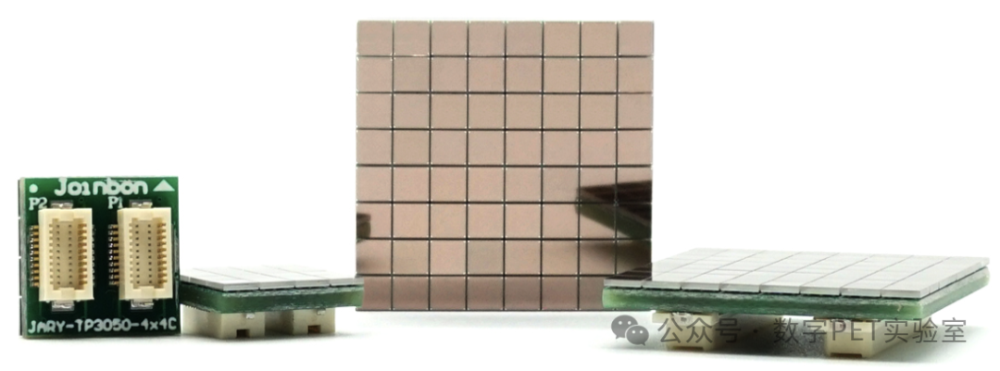
Silicon Photomultiplier...

has achieved new progress...

2.0 system - a technology uniquely developed by our team - has achieved significant breakthroughs...

world's first musculoskeletal ultrasound system will enter clinical use, while a breast ultrasound system that has just completed clinical trials will also be launched soon...

23rd, the all-digital PET/CT launch ceremony of China's high-end medical device representatives was held at the Second People's Hospital of Anhui Province, and the all-digital PET clinica...
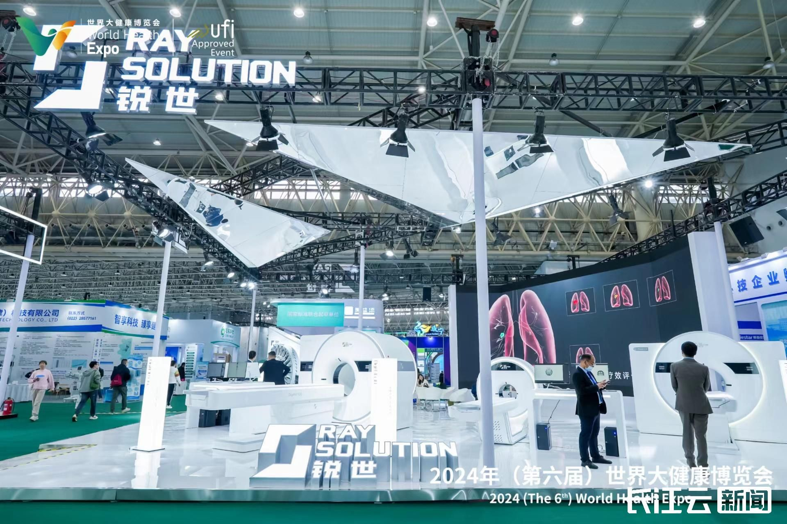
World Health Expo is being held in Wuhan, and nearly 6,000 companies are participating in the exhibition...

imaging technology become a pair of panels, a helmet, or a scanner rebuilt around a living plant...

PET scanner “sees” is not the body, but a fleeting flash inside a crystal...

no longer forced through a fixed hardware pipeline, one PET scan can test different corrections, coincidence rules, and reconstructions...

scintillation crystal emits only a brief, faint burst of light...

“How high is the signal now?” MVT reverses the question: “When did the signal reach this height?” Swapping the axes creates another route to digitiz...

digital PET industrialization unit located in Wuhan, signed a formal contract with the Fourth Hospital of Mongolia, realizing the first overseas sales of clinical all-digital PET medical...
the reporter learned from the official website of the State Drug Administration that the first domestic all-digital PET for brain (ie, DigitMI i30) has been approved for three types of me...

all-digital PET industrialization application acceleration Beijing, Wanlu and other places Multi-point flowering economic daily news client Liu Jie correspondent Yang Ya 2023-04-09 11:59...

the all-digital PET project led by Professor Xie Qingguo started construction in Feixian, Shandong Province, becoming the third production base opened by all-digital PET after Ezhou and H...
second generation of "digital PET" single-bed scanning imaging 20 seconds Zhou Wen January 7, 2023 10:14 | Source: People's Daily - Hubei Channel Small Font Size Recently, a new generatio...
![[Achievement Promotion | National Key R&D Program] Full Digital PET Technology](../assets/pic/news/generated/doubao6/digital-pet-rnd-hero.png)
Xie's team from Huazhong University of Science and Technology first proposed the concept of 'Full Digital PET' internationally in 2004, innovatively using multi-voltage...
the World Intellectual Property Organization (WIPO) held a ceremony at its headquarters in Geneva, Switzerland to award the global prize for small and medium-sized enterprises...
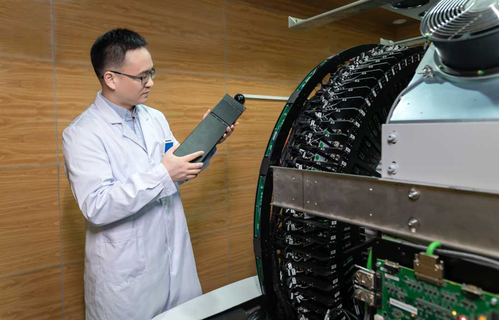
"All-Digital PET Technical Standards and Specifications" led by a team of Chinese scientists formally submitted the comprehensive performance evaluation data of the project, and it is exp...

new year, CCTV Network aired the short film "Promoting the Spirit of Scientists", in which Xie Qingguo, a professor at the School of Life Science and Technology of Huazhong University of...

all-digital PET/CT developed completely independently by China's scientific research team has been officially put into operation for half a year in Ezhou Central Hospital in Hubei Provinc...

the highest accolade in China's patent domain, jointly presented by the National Intellectual Property Administration and the World Intellectual Property Organiz...
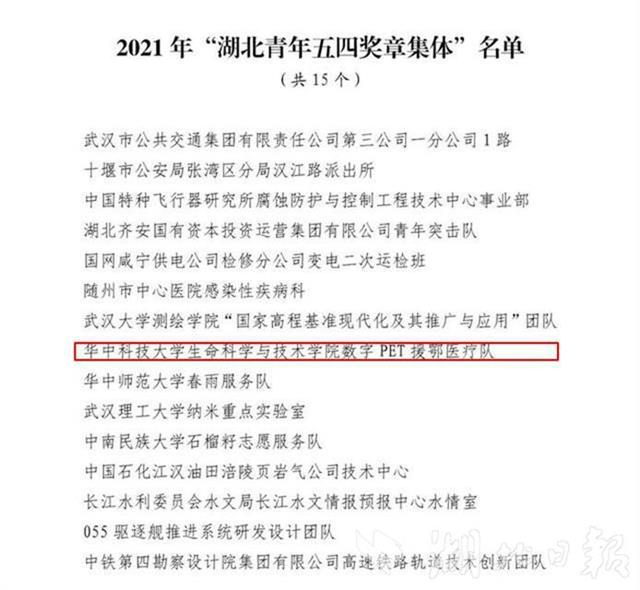
"Hubei Youth May Fourth Medal" commendation list, the Digital PET Aid Medical Team of the School of Life Science and Technology of Huazhong University of Science and Technology was select...

People's Daily focuses on Wuhan's digital economy: Implementing industry-wide digital transformation
industry-wide digital transformation and development of the digital economy to promote industrial integration Reporter Tian Doudou Wujun "People's Daily" (10th edition, April 13, 2021) co...

and Technology Daily, Yang Ya, learned from Huazhong University of Science and Technology on April 8 that the world's first clinical all-digital PET invented by the university's Xie Qingg...
the Economic Daily reporter learned from Huazhong University of Science and Technology that the world's first clinical all-digital PET/CT invented by the university's Xie Qingguo team was...

People's Congress participated in the two sessions...

year, in order to thoroughly implement the package of policies supported by the central government in Hubei and promote the early implementation, early effect and early benefit of the pol...
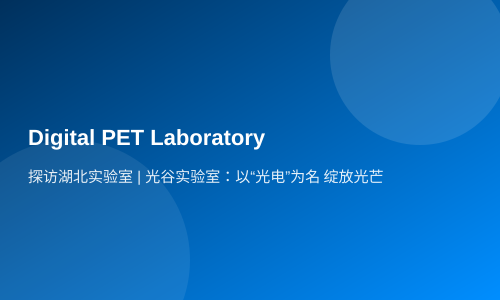
the first batch of seven Hubei laboratories were unveiled...

technological progress news in China selected by academicians of both academies was announced, and "China's independent R&D of clinical all-digital PET/CT equipment was allowed to enter t...

of Sciences and the Chinese Academy of Engineering, and hosted by the Work Bureau of the Faculty of the Chinese Academy of Sciences, the General Office of the Chinese Academy of Engineeri...
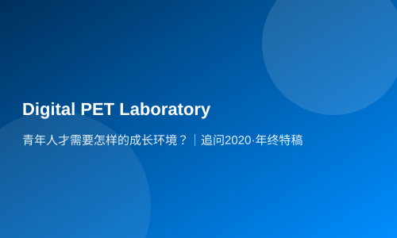
Ren Fangyan 2020 is the year after the wave...

years, Xie Qingguo and his team have pioneered a new digital PET technology route, driving China's original high-end medical devices from scientific principles towards clinical a...

innovation-driven continuous deepening, which is five years of continuous "empowerment" of high-quality development of science and technology...

May Fourth Youth Festival, the Central Committee of the Communist Youth League and the All-China Youth Federation jointly awarded the 24th "China Youth May Fourth Medal", in recognition o...
the National Science Fund for Distinguished Young Scholars (National Science Fund for Distinguished Young Scholars), led his team through a 20-year jou...

me: 2019-08-09 Editor: Cheng Yanan■ Correspondent Yang Ya On July 31, in the 5th China "Internet +" University Student Innovation and Entrepreneurship Competition Hubei Province, our teac...

Qingguo's team spent 19 years breaking new ground, circumventing the technological patent barriers set by international giants, and solving the world-class challenge of PET...

01) Yang Ya, a correspondent for Liu Zhiwei, a reporter of this newspaper, recently announced the "Notice on the Release of Quasi-production Approval Documents" on the website of the Stat...
it was learned from Huazhong University of Science and Technology that Professor Xie Qingguo led the research and development of domestic all-digital PET...

all-digital PET/CT invented by the team of Professor Xie Qingguo of Huazhong University of Science and Technology has recently passed the registration examination and approval of the Stat...

years of hard work, Chinese scientists have developed the world's first fully digital PET scanner with independent intellectual property rights...

edition) Quantum computers, "ghost particles", digital PET2...
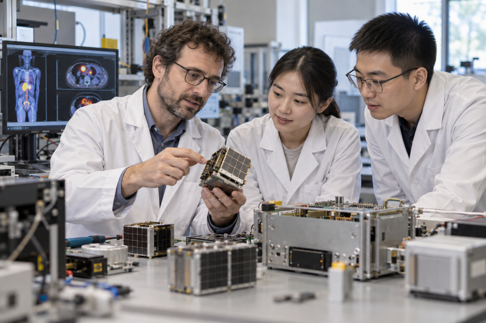
"My Forty Years" series "Experience Forty Years in China" was authorized to publish [Oral Profile] Nicola (from Italy) was born in 1982...
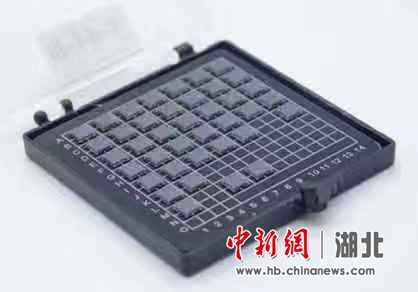
(SiPM) engineering sample independently developed by the digital PET team Hubei News December 27 (Mafurong Wang Xiaoxiao) Recently, researchers at the University of Pisa published a revie...

- All Digital PET Inventor Xie Qingguo Map: Professor Xie Qingguo conducting photon detection experiments □Chutian Metropolitan Newspaper reporter Le Yi Intern Luo Wenhui Correspondent Ya...
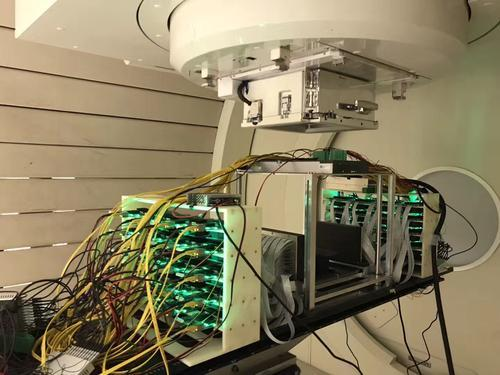
Xie Qingguo, a Chinese scientist and professor at Huazhong University of Science and Technology, were published online in Sensors, an international authoritative journal in the field of e...
Details from Digital PET Laboratory...
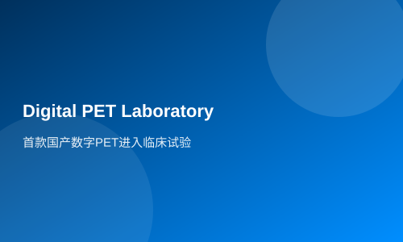
in the development of PET equipment, which is also known as the "three big pieces" of medical imaging with CT and NMR...
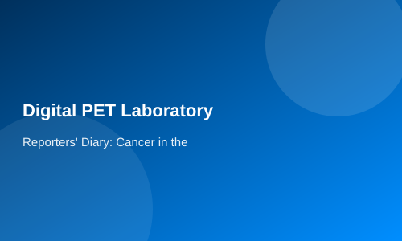

Rüsselsheim, March 17 Interview: I became a "live advertisement" to participate in cutting-edge scientific research in China - Nikola Miller, a graduate student visiting Germany, Xinhua N...

16th, after settling the lunch in the cafeteria, Huazhong University of Science and Technology Digital PET Laboratory foreign student Xu Ge entered the laboratory again...

Jan...
of Huazhong University of Science and Technology, the Digital PET Morise Research Center established in Italy officially welcomed its first doctoral student this month - Emanuele, a 27-ye...
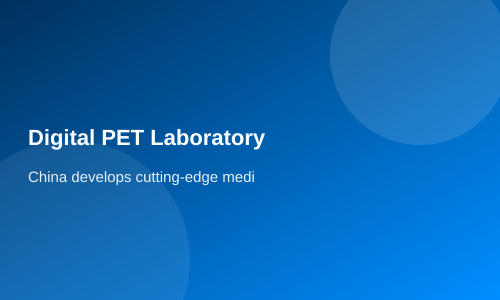
Details from Digital PET Laboratory...

time, mainland scientists used all-digital flat PET for online monitoring of proton beams at Changgeng Memorial Hospital in Taiwan, and achieved good results...

Beijing time, good news was uploaded from the Geneva International Invention Exhibition in Switzerland: Huazhong University of Science and Technology selected 7 projects to participate in...

Digital PET Laboratory of the School of Life of Huazhong University of Science and Technology was awarded the title of Ambassador of the Molise Region by the President of Italy...

(Yang Ya) Recently, the "development and application of ultra-high-resolution PET" national major scientific instruments have produced results...
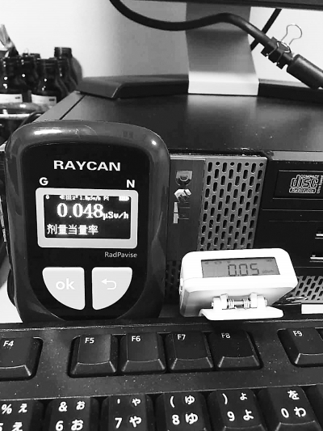
▲Huayi...

traditional heavy industry city...

for a scientific research result to go from the laboratory to industrialization...

"all-digital positron emission tomography (PET)" machine suitable for human clinical use was successfully developed at the Wuhan Optoelectronics National Laboratory, and its spatial resol...
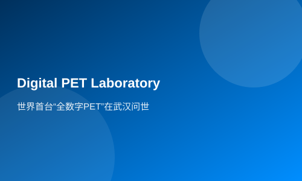
minutes to do a full-body test on the patient, and only takes about half the time of traditional equipment...
undergraduate student in the Department of Biomedical Engineering of the School of Life of Huazhong University of Science and Technology, recently published a paper as the first author at...
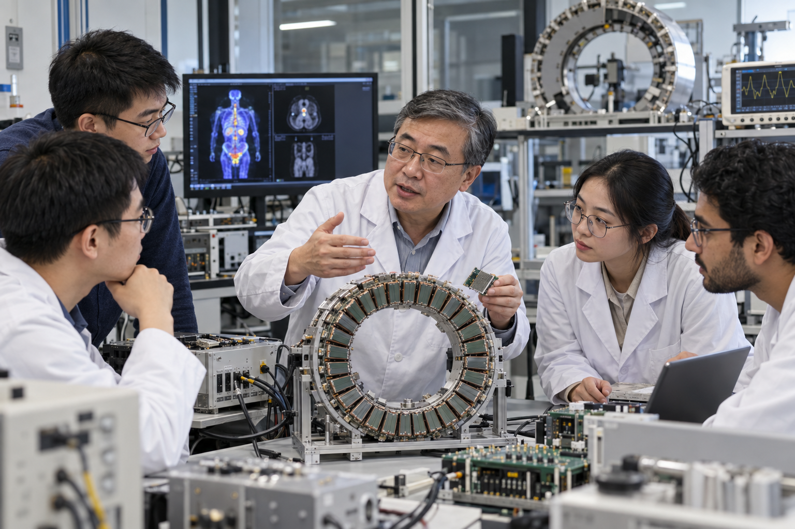
card: Xie Qingguo, male, born in 1972, from Xiaoxita Town, Yichang, Hubei...

"detects invisible rays, turns them into PET images and radiation data; industrializes invisible knowledge and technology, and makes it truly serve society...

(Xiong Shaoyi) At the 2013 Hubei Provincial Science and Technology Award Awards Conference held on February 25, a project called "Small Digital PET Imaging Key Technologies" stood out and...
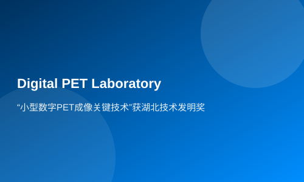
the 2013 Hubei Provincial Science and Technology Award Ceremony was held...
“Preliminary estimates are that we will produce the first large-scale digital PET prototype by the end of this year; if there is investment, the product will be launched to the public in...
the 2012 Scientific Chinese People's Award Ceremony was held at the Wanshou Hotel in Beijing...

cancer, and people are always full of fear...

(Preparation) A research and innovation team led by Xie Qingguo, a researcher in the Biomedical Photonics Research Department and professor at the School of Life of Huazhong University of...

all-digital PET imaging was appraised by an expert group led by Yu Mengsun, a Chinese academician of engineering, in Wuhan on April 5, and was considered to have reached the international...

problem, Xie Qingguo, a researcher in the Biomedical Photonics Research Department of Wuhan Optoelectronics National Laboratory (preparation) and a professor at the School of Life of Huaz...

(PET) with independent intellectual property rights developed by the research team of Professor Xie Qingguo of Huazhong University of Science and Technology has a higher resolution than t...
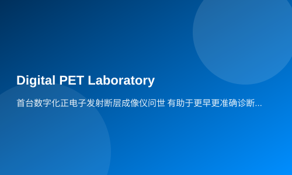
Optoelectronics National Laboratory (Preparation) on December 10 that Xie Qingguo, a professor at Huazhong University of Science and Technology, led a scientific research team to successf...
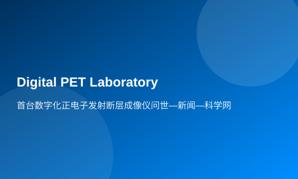
2001, Xie Qingguo led a cross-fusion team of 13 disciplines such as medicine, engineering and science, invented a "multi-voltage threshold sampling method", successfully obtained enough i...
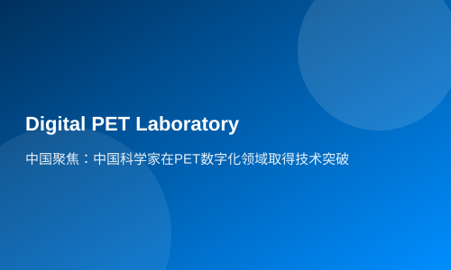
team of 13 disciplines led by Professor Xie Qingguo of the School of Life of Huazhong University of Science and Technology has overcome the technical difficulties of high-end medical inst...